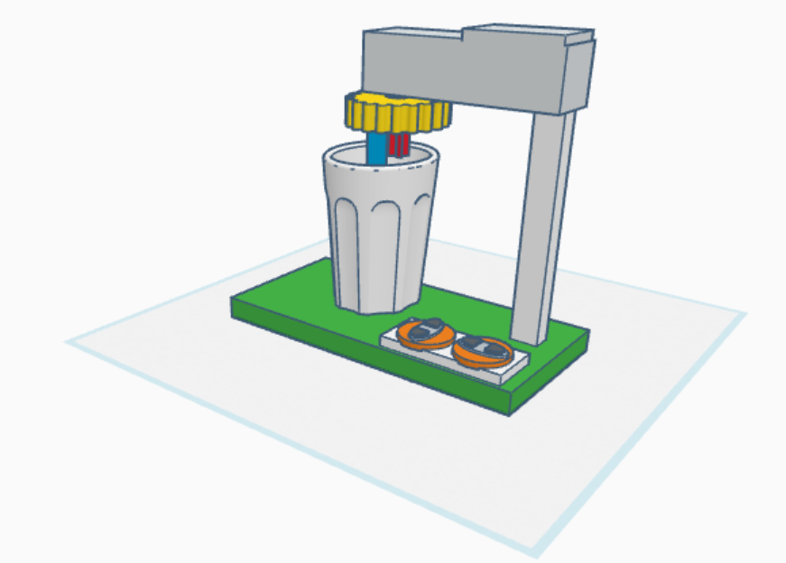

Oakridge International School Gachibowli
By - Saharsh Nandamuri, Rohit Sai Suryadevera, Taanish Agarwal
Hey ! If you are struggling to stir or your hands are sore , you found the right place. We , the —(our
group name) created the robot which can stir automatically for how much time you want it to. This is our
prototype.

text here
Here is our Tinkercad model

text here
Materials we used
Stem Robotics kit